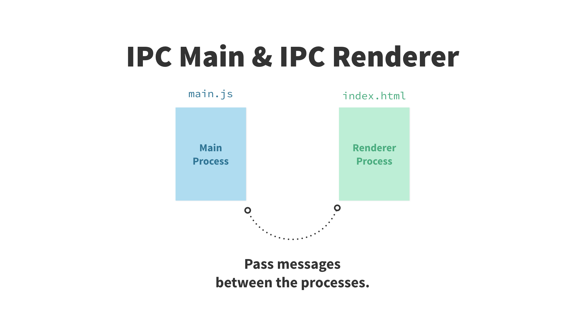

& Native Library Integration
MS Paint 2017
Electron
+
Native Innovatrics Libraries
Processes


Main process
app.on('ready', async () => {
mainWindow = new BrowserWindow({
show: false,
...initialWindowSize,
icon: `${__dirname}/app/app.ico`,
})
mainWindow.loadURL(`file://${__dirname}/app/app.html`)
mainWindow.webContents.on('did-finish-load', () => {
mainWindow.show()
mainWindow.focus()
})
/*...*/

Renderer process
export const importFileBuffer = async () => {
const path = await openDialogPromise(
'Template.sud',
[
{name: 'SUD', extensions: ['sud']},
],
)
if (!path) return
const buffer = await new Promise((resolve, reject) =>
fs.readFile(path, (err, data) =>
err ? reject(err) : resolve(data))
)
if (!buffer) throw new Error('Error while transforming image')
return buffer
}
Note on security
- By default, you get full access to node.js in renderer processess
- You can still achieve a degree of sandbox through
- disabling the node integration, enable contextIsolation in the whole rendere process
- enclosing the content in webview
...be aware that displaying arbitrary content from untrusted sources poses a severe security risk that Electron is not intended to handle.Electron docs
Access to native API
Access to native API
const ipc = require('electron').ipcRenderer
ipc.send('show-dialog', { msg: 'my message' })
ipc.on('dialog-shown', () => { /*do stuff*/ })
const remote = require('electron').remote
const dialog = remote.require('dialog')
dialog.showErrorBox('My message', 'hi.')
Electron
- write or reuse our existing web app
- access to file system and networking via node.js
- control windows and native elements from main process
What about running native code?
We'll talk about C++, but if you need Java or Python, wrappers do exist
The node-addon way
- The most performant option
- Native code compiles using node-gyp
- Requires a working knowledge of V8 and it's types
Our situation: .vsprojx
node-ffi
- node.js foreign function interface
- call a function from dynamic library (.dll in case of Windows) via javascript
- only build the node-ffi lib itself and provide the lib in compiled state for current architecture
Get symbol name
Reference it in js code
const lib = Library('./init', {
'?tryInit@@YAHXZ': [ref.types.int, []],
})
const tryInitCpp = Promise.promisify(
lib['?tryInit@@YAHXZ'].async
)
export const tryInit = async () => {
return !!(await tryInitCpp())
}
Arguments?
Primitive types just like in js
Pointer types referenced through buffer
const buf = new Buffer(4)
buf.writeInt32LE(12345, 0)
await cppFunc(buf)
node-ref
- Provides 'types' for function signatures
- Simplifies work with pointer types
node-ref
/*...*/,
const pDataLength = ref.alloc('int')
const pError = ref.alloc('int')
const errorBuff = new Buffer(maxErrorMessageLength)
let ret = await serializeDataCpp(
/*...*/,
pDataLength,
pError,
errorBuff,
)
ref.deref to get value
if (ret) {
dialog.showErrorBox(
'IDKit Library Error',
`Error at lib.op. ${ret}: ${ref.deref(pError)} - ${errorBuff.toString()}`
)
return
}
ref-array
// typedef
const IntArray = ArrayType(ref.types.int)
const a = new IntArray(3)
a.length // 5
a[0] = 0
a[1] = 1
a[2] = -1
NULL-terminated arrays
const buf = new Buffer(int.size * 3)
int.set(buf, int.size * 0, 5)
int.set(buf, int.size * 1, 8)
int.set(buf, int.size * 2, 0) // terminate with 0s
const array = IntArray.untilZeros(buf)
Usage with ffi
const arg = new IntArray([8, 42, 47])
cppFunc(arg, arg.length)
// c++ code
typedef struct
{
unsigned char angle;
unsigned short x;
unsigned short y;
unsigned char type;
} IENGINE_MINUTIAE, *IENGINE_MINUTIAE_PTR;
ref-struct
const MinutiaeType = StructType({
angle: ref.types.uchar,
x: ref.types.ushort,
y: ref.types.ushort,
type: ref.types.uchar,
})
const MinutiaeArray = ArrayType(MinutiaeType)
'?readUserData@@YAHPAE0PAH01PAUIENGINE_MINUTIAE@@1PAD113H@Z': [
ref.types.int,
[
ref.refType(MinutiaeType),
/*...*/,
],
],
ref-struct
const minutiaeData = range(ref.deref(pMinutiaeCount)).map((i) => {
const minutiae = ref.get(minutiaeData, i * MinutiaeType.size, MinutiaeType)
return ({
angle: convertToPixiAngle(minutiae.angle),
x: (minutiae.x - 1: number), // translate from coord system starting from (1,1)
y: (minutiae.y - 1: number),
type: (minutiae.type: number),
})
})
FFI Disadvantages
- no cross-platform build process (or you'll need to roll one on your own)
- call overhead
- debugging is horrible
Roundup
- write apps just like web frontend
- access to file system and native window API
- use and reuse native libraries